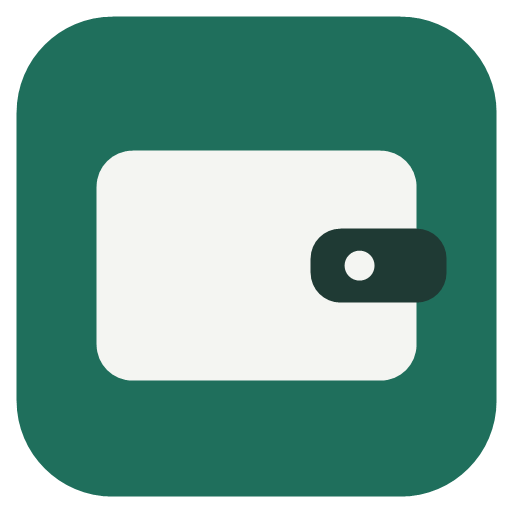
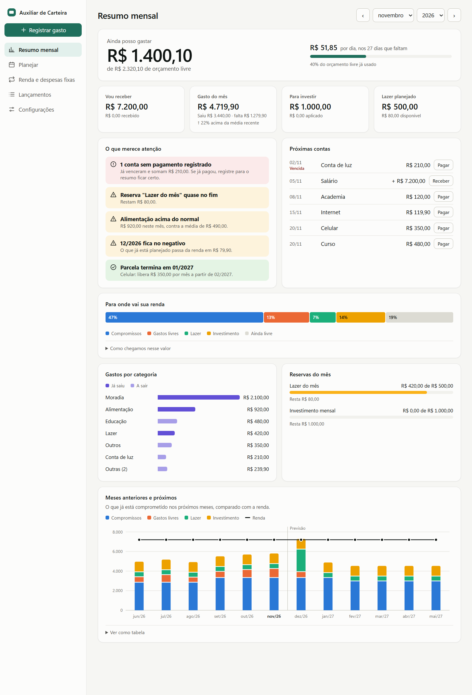
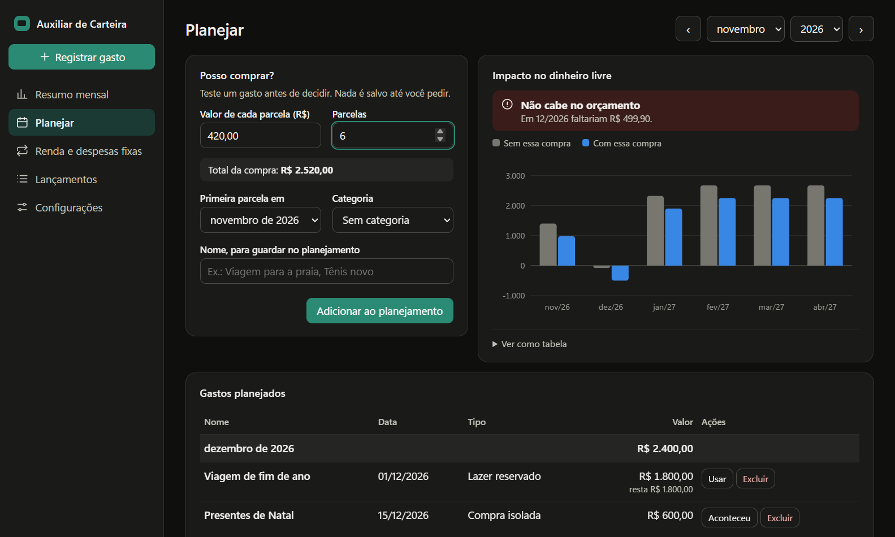

O mês num olhar
Quanto entra, quanto já está comprometido e quanto ainda dá para gastar, até por dia.

Auxiliar de Carteira Código no GitHubCadastre sua renda e suas contas uma vez. O Auxiliar de Carteira mostra o que já está comprometido, quanto sobra e se aquela compra cabe no orçamento.

Sem planilha, sem fórmula e sem digitar as mesmas contas todo mês.
Quanto entra, quanto já está comprometido e quanto ainda dá para gastar, até por dia.
Salário, aluguel e parcelas aparecem nos meses certos, com o número da parcela.
Avisa de conta vencida, gasto acima do normal e mês que vai ficar no vermelho.
Funciona sem internet e sem conta. Nada é enviado para servidor nenhum.
Digite o valor e as parcelas. O simulador mostra mês a mês quanto sobraria, sem salvar nada até você decidir.

Clique em Baixar para Windows. O arquivo termina em .exe.
Abra o arquivo baixado e siga os passos. Leva menos de um minuto.
Cadastre o salário e as contas do mês. O resto o aplicativo calcula.
É normal em aplicativos novos sem assinatura digital paga. Clique em Mais informações e depois em Executar assim mesmo.
Sim. Não tem assinatura, anúncio nem cadastro.
Não. O aplicativo funciona offline. A internet só é usada para ver se há versão nova, e isso pode ser desligado nas configurações.
Não. Tudo fica no seu computador. Você pode exportar um backup quando quiser e guardar onde preferir, como um pendrive ou uma pasta na nuvem.
O aplicativo avisa quando há versão nova. Com um clique ele faz um backup, instala e abre de novo, com os seus dados no lugar.
Por enquanto, só no Windows 10 e 11.